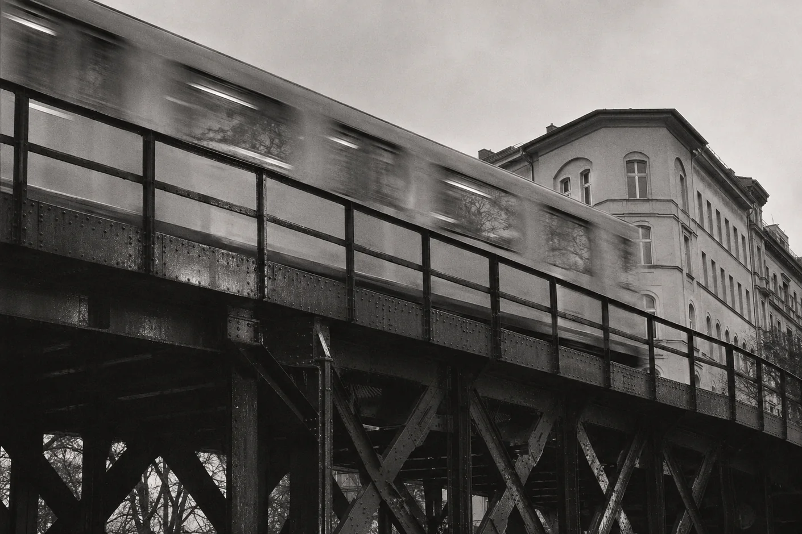

Vadim
I’m a financial controller in Berlin. Outside work, you’ll find me following politics or digging through records.
Watch my election-night highlight
I’m a financial controller in Berlin. Outside work, you’ll find me following politics or digging through records.
Watch my election-night highlight